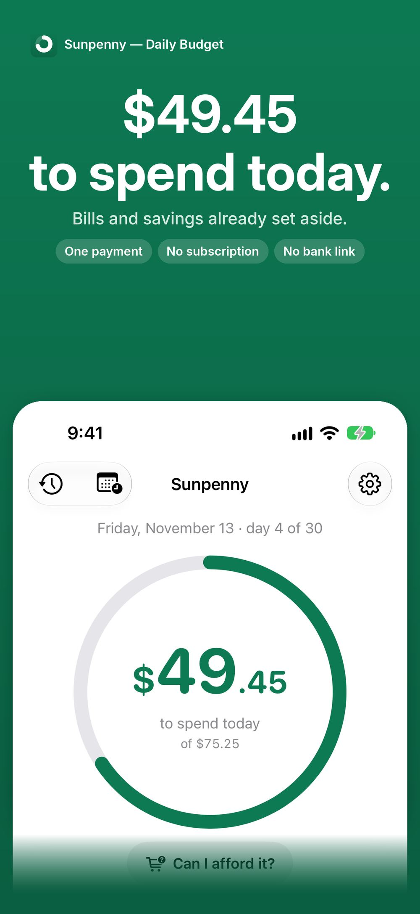
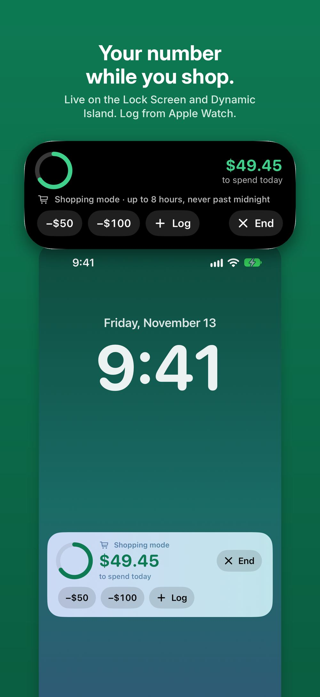
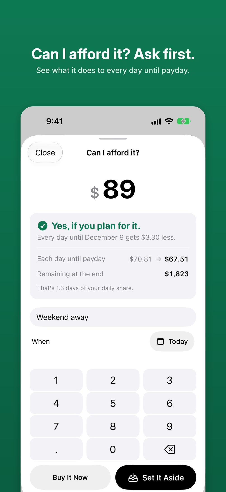
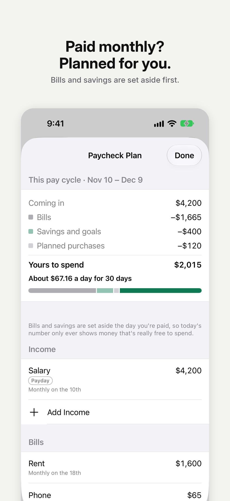
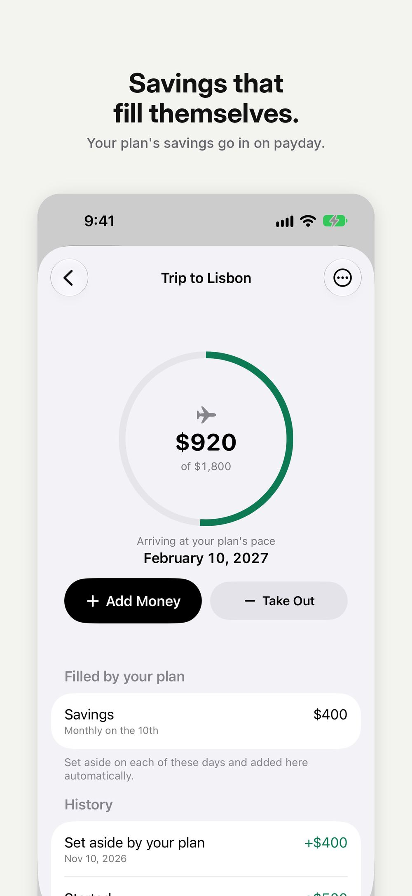
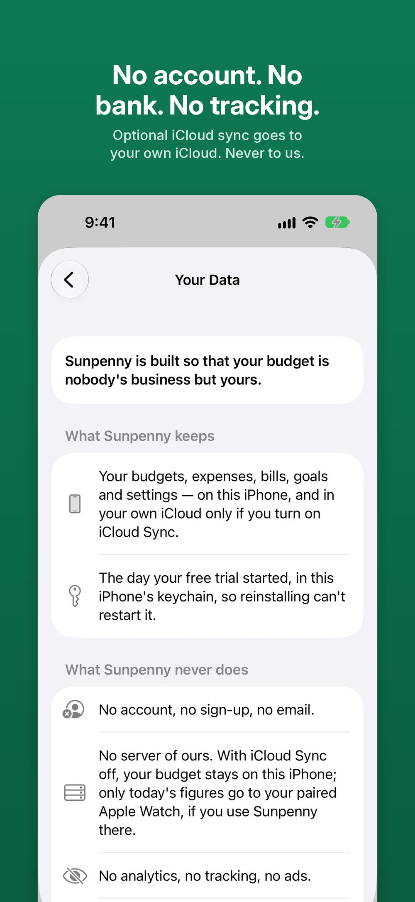

What can I spend today?
Sunpenny answers one question. Tell it what you have and how long it has to last; it shows today's share every morning, and moves as you spend.
Free on iPhone, iPad and Apple Watch, with a free 7-day trial of everything. One optional purchase for the whole family, never a subscription.






How it works
- Say what you have. An amount and how long it lasts — or your pay, your bills and what you save, if you're paid on a schedule.
- See today's number. Spend less today and tomorrow goes up; spend more and it comes down. The last day offers exactly what is still there, to the cent.
- Ask before you buy. Type a price and see what it does to every day until payday, then set it aside.
- Log in seconds. Favourites, Home Screen and Lock Screen widgets, Siri, Control Center or your Apple Watch. Shopping mode keeps today's number on the Lock Screen while you shop.
Private by design
- No bank connection. You type what you spend.
- No account, no sign-up, no email.
- No server of ours, no ads, no analytics, no tracking. The App Store label reads “Data Not Collected”.
- Optional iCloud Sync keeps your iPhone and iPad in step through your own private iCloud — off until you turn it on, and the developer can't see it.
- An encrypted backup you export and keep yourself — or automatic ones, if you turn them on, kept on your device.
Questions
- Is it free?
- A new install has 7 days of everything. After that, today's number and logging stay free for good. One purchase, Sunpenny Premium, adds the paycheck plan, goals, “Can I afford it?”, iCloud Sync, widgets and Apple Watch, insights, full history and export — and it can be shared with your family through Family Sharing.
- Can I bring my spending from another app?
- Yes. Export a CSV file from the other app or your bank and import it in Settings; you choose the columns and see a preview first.
- Does it give financial advice?
- No. Sunpenny divides the money you give it across the days you choose. What you spend it on is up to you.
- Which languages?
- English, Turkish, German, French, Spanish, Italian, Portuguese (Brazil), Dutch and Japanese.
A short guide
Read How much can I spend today? A daily budget without linking your bank.